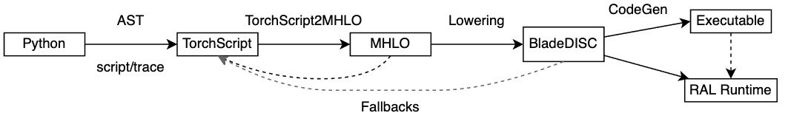

TorchBlade Overview¶

The figure shows how a PyTorch nn.Module is compiled via TorchBlade, aka
BladeDISC for PyTorch.
In general, TorchBlade can be regarded as a compiler targeting a subset of Python language for deep learning.
A PyTorch nn.Module’s forward method is first traced or scripted to
TorchScript. After that, some passes are run to simplify the TorchScript graph,
making it closer to the SSA (Static Single Assignment) semantics. Then, the
compilable subgraphs are converted to MHLO, which will finally be progressively
optimized and lowered for different backends.
TorchBlade only supports AOT compilation currently. While JIT’s process should not differ too much. Go to “Pass Pipeline Walkthrough” for more details about the compilation phase after the TorchScript is converted to MHLO.
Problems to be Resolved¶
The design principles of PyTorch emphasize simplicity and usability. PyTorch models are just Python programs under the full control of its user. The pythonic nature of PyTorch makes DSC(Domain Specific Compiler) suffering from language subset problems more severe than other frameworks like TensorFlow.
TorchBlade compiler is put in front of the following challenges:
PyTorch
Tensor’s memory buffer is visible to its usersA user can do in-place modifications on the view of a
Tensorwhich may produce data hazards during compiler optimizations
The coverage of operators
It’s not practical to support conversions for all operators from PyTorch to low-level IR of DSC, especially for productive applications
The pythonic semantic and syntax
It’s hard to catch and optimize the computation graphs of PyTorch models due to the usage of Python such as decorators,
try ... catch, and data structures such asListandDict
The construction of end-to-end performant compiler stack for PyTorch
How TorchBlade Addresses Such Problems¶
TorchBlade is tailored for PyTorch and BladeDISC. It chooses MHLO as the tensor level “hub” IR with the considerations:
Well established by the XLA community and continuous improvements from the mlir-hlo project
The finer granularity and the expressive ability is suitable to bridge PyTorch operators and lower level passes
The support for dynamic shapes is well established by BladeDISC-TensorFlow
Conversion and Lowering¶
The following conversions and optimizations are necessary before a PyTorch operator is converted MHLO operators:
Inline the functions and methods
Freeze the parameters while reserving the required attributes
Materialize the ranks and data types of the tensors and parameters
Statically imitate and fold python operations, such as operations on
ListandDictRun compiler optimization passes like constant folding and dead code elimination
Do aliasing analysis and rewrite in-place operations to out-of-place corresponding versions, since MHLO is an SSA IR and the in-place semantics have to be eliminated
Clustering and Fallback¶
MHLO can only support a subset of operators of TorchScript where tensors are immutable values. TorchBlade addresses such issues with a clustering and fallback mechanism:
Iteratively run the “conversion and lowering” passes to clean pythonic IR’s and simplify the TorchScript graph closer to computations with SSA semantics
Collect the supported subset of nodes from the simplified TorchScript graph
Do clustering on the supported subset of nodes, with the consideration to avoid cyclic
Finally, merge the clustered subgraph and convert it to MHLO; All the left nodes will fallback to PyTorch/TorchScript runtime
IR Converters¶
The IR converters are precisely the primary mechanism that supports converting and lowering from TorchScript to MHLO
Query if the conversion of a graph node can succeed under a certain conversion context. It’s required because some aten operators are ambiguous since their semantics depend on their inputs. For example,
aten::convolutioncan be used to represent ‘Conv1D’, ‘Conv2D’, ‘Conv3D’, but a converter for ‘Conv3D’ is not supported for nowBuild an MHLO module by walking the TorchScript subgraph and converting each TorchScipt operator to MHLO operator.
To add a new converter from PyTorch to MHLO, please refer to “How To Add a New Torch Op Converter”
Runtime(RAL, Runtime Abstraction Layer)¶
The runtime of BladeDISC compiler, more details
Some Noteworthy Details¶
Relations Between aten::Tensor and MHLO Tensor¶
An aten::Tensor is a memory buffer with shapes that can be viewed and modified
in place. However, MHLO Tensor is immutable. Any operations on MHLO Tensors
will create new MHLO Tensors. The memory buffer does not exist in the IR until
the phrase lowers IR to LMHLO.
To enlarge the supported region in TorchScript graph, TorchBlade tries to eliminate memory-write operations as much as possible and only clusters those graph nodes that will not cause data hazards.
Relations Between Scalar and 0-Rank Tensor¶
A torch
aten::Tensorcan be viewed, reshaped, sliced, and modified. But a torchScalarcan’tA 0-rank
Tensorin MHLO is equivalent to aScalar, and they can be converted to each other.Scalaris preferred in TorchBlade, because it’s semantic is more precise. AndScalarswould be converted 0-rankTensorsif needIn TorchBlade, torch
Scalarwas converted to mlir standard dialect operatormlir::ConstantOpsinceScalaris immutable
How TorchBlade Converts List[Scalar] and List[Tensor]¶
TorchBlade only converts List of Scalars and Tensors whose elements can be
analyzed statically at conversion time for now. Once the elements are known, we
will imitate the operations of List at conversion time, so there is no need to
preserve List anymore. Otherwise, the List operations will be left
unsupported and fall back to PyTorch runtime, so does Dict.